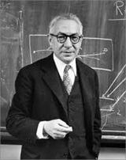

What led to the creation of MRI machines?
Magnetic Resonance Imaging (MRI) emerged from decades of scientific breakthroughs in physics, chemistry, and medicine. Here is a deeper look into some of the primary moments and people who shaped its development.
The Foundation: Nuclear Magnetic Resonance
In 1938, Isidor Isaac Rabi first observed nuclear magnetic resonance using molecular beams in a vacuum. His technique allowed an increased precision when taking measurements of nuclear magnetic moments, and earned him the 1944 Nobel Prize in Physics.
Rabi's work laid the groundwork for future applications, but it was limited to isolated nuclei in non-biological settings
From Physics to Biology: Bloch and Purcell's Breakthrough
In 1946, Felix Bloch and Edward Purcell independently demonstrated NMR in condensed matter. For this, Bloch used water and Purcell used paraffin wax
Their work showed that water molecules in tissues respond differently to magnetic fields, concluding that a difference could be determined between different tissue types.
They were jointly awarded the 1952 Nobel Prize in Physics for developing methods for nuclear magnetic precision measurements.
Early Biomedical Applications: Odeblad and Lindström
Pioneering research, published in 1955 by Erik Odeblad and Gunnar Lindström, showcases different tissues have distinct relaxation times, likely due to water content and lipid binding.
Odeblad adapted an early spectrometer to study biological samples which layed the foundation for MRI contrast mechanisms.

Damadian's Vision: Cancer Detction with NMR
In 1971, Dr Raymond Damadian published a paper in
He hypothesized that NMR could be used to non-invasively detect cancer, and filed the first patent for a body scanner in 1972, approved in 1974.
On July 3, 1977, Damadian and his team produced the first full body MRI scan using a machine called Indomitable.
References
- Lindsay, R. (n.d.). The history of the MRI - from the first MRI to today . MXR. https://mxrimaging.com/Blogs/History-of-the-MRI-System
- History of NMR: Products: Jeol Ltd.. History of NMR | Products | JEOL Ltd. (n.d.). https://www.jeol.com/products/scientific/nmr/history.php
- Wakefield, J. (2000, June). The “indomitable” MRI. The “Indomitable” MRI. https://www.smithsonianmag.com/science-nature/the-indomitable-mri-29126670/
- Garet, L. (2025, May 8). History of mris and the evolution of this life-saving technology. Ezra. https://ezra.com/blog/history-of-mri-scans